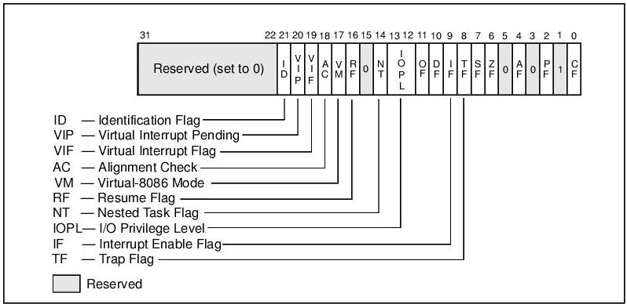
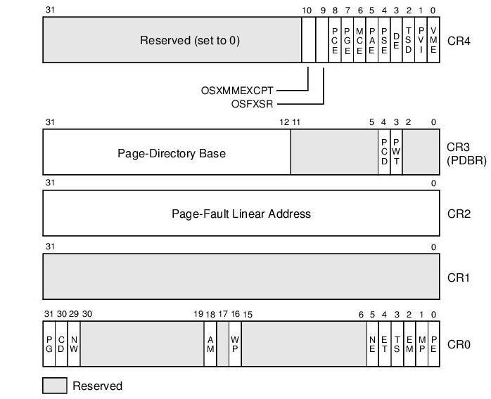

L'architettura del processore
Affrontiamo ora degli argomenti di notevole impegno. Il nostro scopo per la fine di questa lezione è:
- Configurare i segmenti di memoria
- Configurare gli interrupt e gli irq
Per iniziare impariamo a conoscere come funziona l'architettura IA32. Per ulteriori approfondimenti leggere i tre manuali della intel, sopratutto il terzo. I disegni sono stati presi da li. Da buon despota illuminato spesso cercherò di rendere più facile il tutto tralasciando di dire alcune cose, oppure semplificando i concetti.
Innanzitutto analizziamo come funziona IA32 e che caratteristiche ci offre.
Un processore IA32 sostanzialmente ha 3 modi di funzionamento (in realtà sono 4) la modalità reale, la modalità protetta e la modalità virtual 8086.
Appena viene avviato il pc, il processore è in modalità reale e si comporta a tutti gli effetti come un 8086 ma molto + veloce.
La modalità protetta è la modalità che è stata introdotta col 286 (e poi espansa col 386+) e permette di sfruttare tutte le potenzialità dell'architettura IA32.
Infine abbiamo la modalità virtual 8086 che ci permette di avere un ambiente in modalità reale ma dentro la modalità protetta.
Noi ci concentreremo sulla modalità protetta nei processori da 386 in su.
A partire dal 386 abbiamo dei registri in più e delle strutture che ci permettono di configurare la memoria, i processi, etc.
I registri general purpuse sono stati espansi a 32 bit (eax, ebx, ecx, edx, esi, edi) anche lo stack pointer e il base pointer sono diventati a 32 bit (esp, ebp); anche l'istruction pointer (eip) e i flag (eflag) sono stati estesi.
Inoltre abbiamo dei registri nuovi:
- GS e FS sono registri segmento senza una specifica funzione
- cr0 --> cr4 sono 5 nuovi registri di controllo per processore
- gdtr che contiene la descrizione della gdt
- idtr che contiene la descrizione della idt
- ldtr che contiene la descrizione della ldt
- tr che contiene l'indirizzo del primo tss
- gestione della paginazione.
Ecco un disegno riassuntivo:
Iniziamo ad analizzare gli eflag:

- TF: Da settare per abilitare la modalità single-step per il debug, cancellarlo per disabilitare questa modalità. In single-step model il processore genera un eccezione di debug dopo ogni istruzione. Se un applicazione setta il TF flag usando POPF, POPFD o IRET, l'eccezione viene generata dopo questa istruzione.
- IF: indica se gli interrupt sono abilitati
- VM: Virtual-8086 mode: da settare per abilitare l'emulazione dell'8086.
- ID: Indica la capacità di usare l'istruzione cpuid
Gli alri flag non ci interessano o comunque sono banali: basta vedere nel manuale della intel.
Analizziamo i registri di controllo:

Iniziamo con cr0:
- PE: Protection enable. Abilita la modalità protetta quando settato e abilita la modalità reale quando è spento. Quando si abilita il pmode automaticamente non viene anche attivata la paginazione.
- WP: Quando abilitato non permette la scrittura di pagine a sola lettura a livello utente da parte dei supervisori (CPL < 3)mentre quando è disabilitato permette di scriverci sempre per CPL < 3.
- PG: Quando è acceso permette e abilita la paginazione. Per avere effetto deve essere attivo anche PE.
Useremo intensivamente cr2 e cr3 quando programmeremo la paginazione, quindi ce ne occuperemo un altra volta.